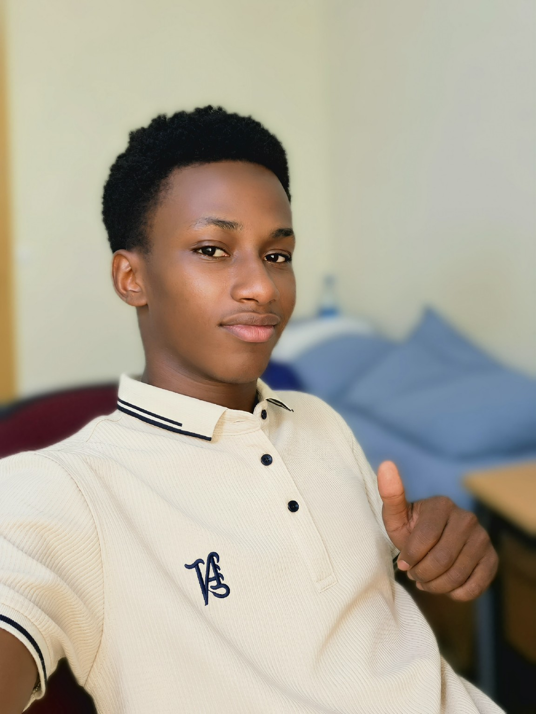

Front-end
HTML, CSS, JavaScript, responsive design, interfaces interactives et attention aux détails visuels.
HTMLCSSJavaScript

Disponible pour stage, freelance & collaborations
Je suis Adama Ly, développeur web junior en formation au Sénégal. J'aime concevoir des interfaces propres, construire des produits utiles et apprendre en réalisant des projets concrets.
01 / PROFIL
Mon parcours est orienté vers le numérique : après un passage en Première L, j'ai choisi de me concentrer sur la formation en développement web et surtout sur la pratique. Je progresse en construisant des sites et applications, en testant mes idées et en améliorant mes réalisations.
Je suis particulièrement motivé par les produits qui combinent interface, automatisation, API et intelligence artificielle. Mon objectif est de continuer à monter en compétence pour créer des solutions web professionnelles, maintenables et utiles.
02 / COMPÉTENCES
HTML, CSS, JavaScript, responsive design, interfaces interactives et attention aux détails visuels.
Connexion d'interfaces à des API, manipulation de données, formulaires, logique client et expériences dynamiques.
Construction de sites rapides avec Astro et mise en place de flux éditoriaux structurés.
GitHub pour versionner et présenter mes projets, Vercel pour déployer rapidement des expériences web.
Exploration de l'IA générative pour enrichir des produits web et automatiser certaines tâches de contenu.
Sérieux, curiosité, persévérance, autonomie, sens de l'apprentissage et envie de résoudre des problèmes.
03 / PROJETS
Application web interactive autour de l'horoscope quotidien : profil utilisateur, quiz, 12 signes du zodiaque, historique, classement, mode sombre et expérience bilingue français/anglais.
Outil web avec interface simple pour saisir une URL, choisir MP4 ou MP3 et lancer un téléchargement via une API backend. L'interface gère validation, chargement, erreurs et récupération du fichier.
Site vitrine conceptuel pour une clinique : accueil, services, équipe médicale et prise de rendez-vous. Le projet met l'accent sur une hiérarchie claire, une navigation multi-pages et un rendu responsive.
Projet média tech en Astro, orienté IA, cybersécurité, mobile, cloud, robotique et startups. Le projet utilise du contenu Markdown, des flux RSS et une automatisation éditoriale avec Gemini pour produire et organiser des articles.
04 / PARCOURS
Parcours orienté pratique : conception de sites, développement front-end, projets personnels et apprentissage continu.
Parcours scolaire interrompu avant la Terminale, puis réorientation vers le numérique et le développement web.
Mon CV est disponible dans ce portfolio. Les diplômes et certifications officielles seront ajoutés ici uniquement après vérification de leurs intitulés exacts.
Ouvrir le CV ↗05 / CONTACT
Je suis ouvert aux stages, collaborations freelance et projets numériques qui me permettent de créer, apprendre et apporter une vraie contribution.